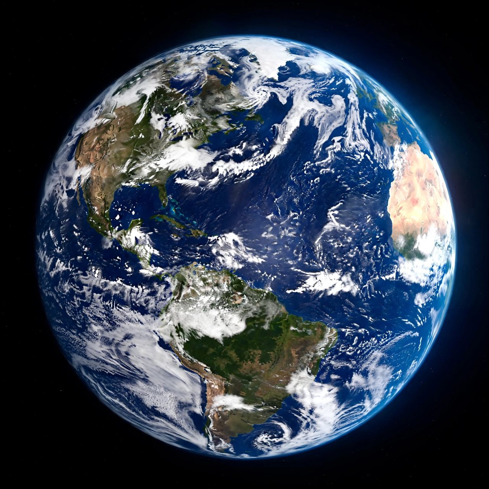

Biosphere

The biosphere is the global sum of all ecosystems — the zone of Earth where life exists, from the deepest ocean trenches and subsurface rocks to the lower atmosphere reached by birds and wind-blown microbes. Life occupies a remarkably thin film on the planet: most of it lives within a couple of kilometres of the surface, though the total span from trench floor to upper air is about 20 kilometres.
The term was coined by geologist Eduard Suess in 1875 and developed by Vladimir Vernadsky, whose 1926 book The Biosphere treated life as a geological force that shapes the planet's chemistry.
Life as a geological force
Vernadsky's insight is now Earth-system common sense: organisms oxygenated the atmosphere, built limestone mountains and coal seams, and still mediate the cycles of carbon, nitrogen and water (see {L('Carbon_cycle')}). Estimates of total biomass put plants overwhelmingly first — a few hundred billion tonnes of carbon — with bacteria second and all animals a small fraction; humans and their livestock now far outweigh wild mammals.
Humans have become a biospheric force in our own right: moving more rock and soil than rivers do, fixing more nitrogen than nature, and driving extinction rates far above background (see {L('Biodiversity')}).
Reserves and experiments
UNESCO's Man and the Biosphere programme designates biosphere reserves — several hundred sites worldwide — that combine conservation with sustainable use. The name was also borrowed by Biosphere 2, the sealed ecological facility in Arizona where eight people lived under glass in 1991–93; its difficulties (falling oxygen, food shortages) became a famous lesson in how poorly we still understand the original. See {L('Gaia_hypothesis')} for the idea that the biosphere regulates itself.
See also: Ecosystem · Biodiversity · Carbon cycle · Gaia hypothesis · Vladimir Vernadsky